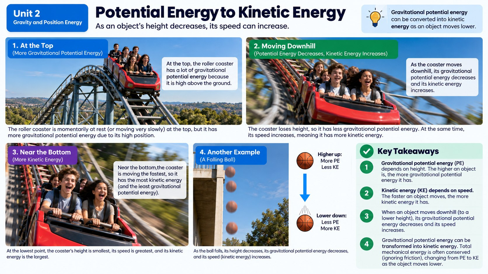

The instant a roller coaster cart tips over the top of the first hill and starts speeding downward, where does all that stored energy actually go?

The Big Switch
Gravitational potential energy doesn't just sit around forever. The moment an object with GPE is released, whether it's a cart cresting a hill, a diver pushing off a platform, or an apple letting go of its branch, that stored energy starts converting into kinetic energy, the energy of motion. The higher an object started, the more potential energy it had, and the more kinetic energy it can gain on the way down.
This conversion happens continuously, not all at once. As the cart drops lower and lower, it loses height (and therefore GPE) while gaining speed (and therefore kinetic energy) at almost the exact same rate. At the very bottom of the hill, nearly all of that original stored energy has become the energy of motion, which is exactly why the bottom of the first hill is usually the fastest point on the entire ride.
Here's what that trade actually looks like with real numbers. Imagine a 2-kilogram cart sitting at the top of a 20-meter hill, with friction small enough to ignore. Its gravitational potential energy at the top would be roughly 2 x 9.8 x 20, or about 392 Joules. Because energy doesn't just disappear, all 392 Joules of that stored energy shows up as kinetic energy by the time the cart reaches the bottom of the hill. Working backward from that kinetic energy, physicists can even calculate exactly how fast the cart must be moving at the bottom, since kinetic energy depends on both an object's mass and its speed.
Why Doubling Your Speed Is a Big Deal
Kinetic energy depends on two things: an object's mass and its speed. But those two ingredients don't behave the same way. If you double an object's mass while keeping its speed the same, its kinetic energy simply doubles too, a straightforward, proportional relationship. Speed is a whole different story. If you double an object's speed, its kinetic energy doesn't just double, it becomes four times larger. Triple the speed, and kinetic energy jumps to nine times as much.
This happens because kinetic energy depends on speed squared, not just speed by itself. If you graphed kinetic energy against mass, you'd get a straight line. But if you graphed kinetic energy against speed, you'd get a curve that shoots upward more and more steeply. That's part of why small increases in a car's speed make crashes so much more dangerous, and why the steepest part of a roller coaster hill produces such a dramatic burst of speed and thrill.
This squared relationship has serious real-world consequences outside of amusement parks too. A car traveling 60 miles per hour doesn't carry just twice the kinetic energy of a car traveling 30 miles per hour, it carries four times as much, which is a major reason crash damage and stopping distances increase so sharply as speed climbs. It's also why speed limits drop so much in places where a crash would be especially dangerous, like school zones and sharp curves, since even a modest reduction in speed produces a much bigger drop in the kinetic energy involved in a collision.
Energy Doesn't Just Disappear
One of the most powerful ideas in all of science is that energy doesn't simply vanish or get created from nothing; it transforms from one form into another while the total amount stays constant. On a roller coaster, the sum of gravitational potential energy and kinetic energy at any point stays roughly the same throughout the ride, assuming friction and air resistance are small. At the top of a hill, energy is mostly GPE. At the bottom, it's mostly kinetic energy. On the next hill going back up, kinetic energy converts back into GPE as the cart climbs and slows down.
This back-and-forth trade between stored and moving energy is why later hills on a roller coaster are always shorter than the first one. Every trip up a hill, plus every bit of friction with the track and air resistance, uses up some of that original energy budget, so the ride can never climb higher than where it started.
Not Just Gravity: Storing Energy at a Distance
Gravity isn't the only force that can store potential energy in a system of two objects. Magnets and static electric charges work in a similar way. Two magnets that attract each other store more potential energy the farther apart you pull them, just like lifting a ball higher against gravity stores more GPE. Push those magnets back together, or drop the ball, and that stored energy converts into kinetic energy as the objects speed toward each other.
In every one of these cases, whether it's gravity, magnetism, or static electricity, the same basic pattern shows up: increasing the distance between two attracting objects increases the potential energy stored in the system, and that energy is ready to become motion the instant something lets the objects move back together.
Does a Heavier Cart Really Go Faster?
It's tempting to think that a heavier roller coaster cart must reach a faster speed at the bottom of a hill than a lighter cart released from the exact same height, but that's not actually true. Just like the bowling ball and the marble falling at the same rate, two carts of different mass released from the same height on the same frictionless track will reach the bottom moving at the same speed. That might seem to clash with everything you just learned about mass affecting kinetic energy, but it doesn't: the heavier cart does end up with more total kinetic energy at the bottom, simply because it also has more mass, not because it's moving any faster.
This is a great example of why it pays to be precise about exactly what's changing in a science question. Speed and kinetic energy are related, but they are not the same thing, and mixing them up is one of the most common mistakes people make when reasoning about energy and motion. The next time you're asked to compare two moving objects, get in the habit of asking whether the question is really about how fast something is going or about how much energy it's carrying, because the answer can be completely different depending on which one you mean.
Energy Trade-off as an Object Falls
Real-World Connections
Ski Jumping
A ski jumper builds up gravitational potential energy climbing to the top of the ramp, then converts nearly all of it into kinetic energy (speed) by the time they launch off the end.
A Swinging Pendulum Clock
A grandfather clock's pendulum constantly trades potential energy (at the top of its swing) for kinetic energy (at the bottom) and back again, which is part of what keeps its timing so precise.
Meet the Scientist
Winter Sports Course Designers
Engineers who design Olympic ski jump and bobsled courses use potential-to-kinetic energy calculations to shape ramps and turns, predicting exactly how fast athletes will be traveling at each point on the course to keep extreme-speed sports as safe as possible.
Key Vocabulary
Bold, underlined words in the reading above are clickable too. Tap one to see its definition pop out. Or click or tap a card below to reveal the definition.
Explore More
Chapter Review
1. As a roller coaster cart drops from the top of a hill to the bottom, what generally happens to its gravitational potential energy and kinetic energy?
2. A cart's speed doubles as it rolls down a hill. If its mass stays the same, what happens to its kinetic energy?
3. Why do roller coasters get shorter with each successive hill after the first one?
4. Two magnets attracting each other are pulled farther apart. What happens to the potential energy stored in that magnet system?
5. Cart A has twice the mass of Cart B, but both carts move at the same speed. How does Cart A's kinetic energy compare to Cart B's?
California Science Test (CAST) Practice
A 1-kilogram ball is dropped from a 20-meter tower. Assuming friction and air resistance are small enough to ignore, researchers record the ball's height above the ground along with its gravitational potential energy and kinetic energy at four moments during the fall.
| Height above ground (m) | Potential Energy (J) | Kinetic Energy (J) |
|---|---|---|
| 20 | 196 | 0 |
| 15 | 147 | 49 |
| 10 | 98 | 98 |
| 5 | 49 | 147 |
| 0 | 0 | 196 |
Which claim is best supported by the data in the table?